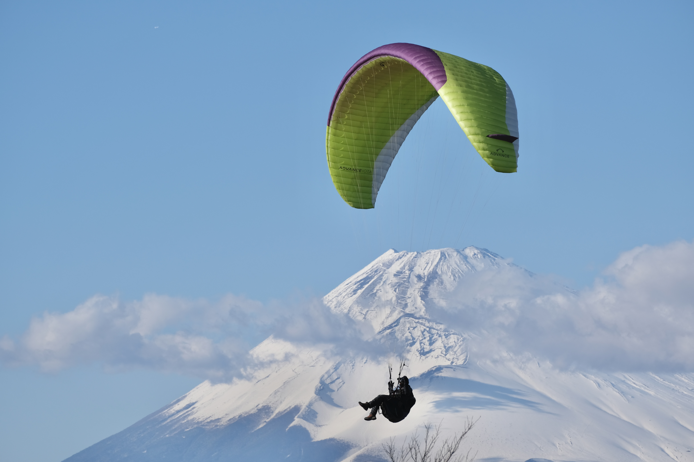
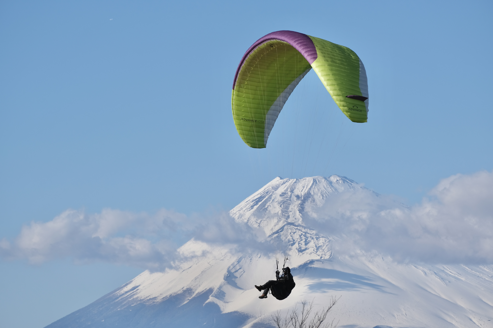

Daikoku Parking Area
Scroll left for more info

Photography Techniques
- Rule of Thirds
- Reflections
- Motion Pans
- Close-Ups/Details
- Long Exposure
- Light Painting
- Color Focus
- Positioning
- Symmetry and Asymmetry
- Foreground Elements
Daikoku Parking Area, renowned among car enthusiasts, is a hotspot for automotive photography, especially during car meets. The area attracts a wide variety of vehicles, from vintage cars to high-performance sports cars, giving photographers an opportunity to capture diverse designs and details. The industrial backdrop of highways and overpasses enhances the dramatic effect of night shots, especially with the cars illuminated under the artificial lights. Ideal for those seeking to capture detailed close-ups of cars or wide-angle shots of the entire scene, this location offers endless creative possibilities for automotive photography.
 
